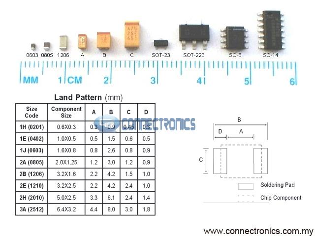

Homemade Hardware
Overview
Instructor: Andy Sigler
Email: andrewsigler1@gmail.com
Class Time: Thursday afternoons, 3:20-6:15pm
Office Hours: 20 minutes Sign up here
Grading:
ITP is pass/fail, but you do still get graded. To pass, students must document and show work and progress through out the semester, and cannot miss more than 2 classes without prior notice.
- Attendance and Participation: 30%
- Blogging and Assignments: 30%
- Final Project: 40%
Class 1
Jan 25
Course and Student Introductions
Breadboard Arduino and ATtiny85
- See the process of bootloading and programming an ATtiny85 described in the Microcontrollers Process section.
For next class:
Buy everything form the things page (yes, even the bits)
Breadboard ATtiny85 sensor that controls an LED. Commit to an interaction and sensor circuit for the Marquee letter assignment due Week 4.
Send me a link to your "Homemade Hardware" blog category. Create a first post including a hand-drawn schematic of your breadboard, and a video of it working.
Read through the following:
- Review the P-Comp lesson on microcontrollers.
- Open every link in the Microcontrollers Process section. It's technical reading, but try to understand the basics.
- Watch the how to solder and also the soldering PCBs videos, we'll be soldering for an hour of next class.
Class 2
Feb 1
Soldering how-to
See the videos on how to do simple soldering in the in the soldering section of the Process page
If you are interested in seeing some more advanced stuff, check out Sparkfuns series of tutorials on soldering. It's mostly surface-mount examples, but the basic principals on how solder moves and what the common issues are the same with through-holes parts.
Eagle Schematics and Board Design
We went through some commands in class. Here are what we talked about, and a basic description:
- ADD: Load a new part into you Schematic (not available in Board design)
- DELETE: Delete anything from your Schematic (restricted in Board design)
- MOVE: Move anything around, and right-click to rotate (same in Schematic and Board design)
- ROTATE: Rotate a part (restricted to 90degree rotations in Schematic design)
- NET: Create an electrical connection between two PINs in Schematic design (not available in Board design)
- COPY: Copy a part in your Schematic design (restricted in Board design)
- ROUTE: [Board design only] Draw an electrical connection as a copper trace (1mm is good thickness)
- RIPUP: [Board design only] Undo or remove a ROUTE that you have previously drawn
-
[SPACE-BAR DURING ROUTE]: [Board design only] Drop a "VIA" (a hole) while routing, so that your copper trace jumps to the other side of the board.
NOTE: We will start with single-sided PCBs, so keep in mind that all "jumps" like this to the other side will end up being "air-wires"

For next class:
- Finish your Arduino shield programming jig for the ATtiny85 so that you can use it next week on your project.
- Create Eagle files for ATtiny85 sensor + LED. Take screenshots of both your schematic and board files, and upload them to your blog.
- Nominate a 13 letter phrase on this shared document
Class 3
Feb 8
Othermill
I've added a checklist of what to do when using the Othermill in the Process section of this website. Read through it while setting up your milling job. There is also a section on using Engraving Bits, and a video on cleaning copper plates.
Also you can look through this introduction to the machine by Bantam Tools.
Assemble Interactive Marquee Letter
TIP120 Pinout
We will use a TIP120 transistor so that you can drive super bright LEDs if you'd like. Those require more current than your Arduino/ATtiny85 pin can output, so we use a transistor to turn on and off those higher currents.

Class 4
Feb 22
Assemble our Marquee Sign
Great jog everyone, everyone's PCBs work!!! Find the sign assembled and hanging on the wall.
Larger AVR Microcontrollers
Here is a zip file containing the boards from class, containing each of the below microcontrollers
The ATtiny84 (on digikey) is just like the ATtiny85, except it has more pins. The ATtiny84/85 are both fairly easy to solder down compared with other microcontrollers and modules.
The ATMega328p (on digikey) is the most popular microcontroller around, it's what powers the Uno, Pro Mini, Adafruit Metro, and many others. It is difficult to solder down, but it's such a great chip that maybe you'll want to give it a try. Also, it does not support an "internal" clock, so you need to add a crystal or resonator to you circuit (we have 8mhz resonators in the cage).
The ATMega32u4 (on digikey) is very similar to the 328p, except it has hardware USB support, so it can act as a USB device.
Surface-Mount Packages
When selecting surface mount (SMD) components, it is important to pay close attention to the package (the shape) that the part comes in. If your components are not the same shape as in your Eagle file, then they will not be able to fit onto your PCB.
In the image above, you can see that the ATtiny85's package is what's called an SO-8 or SOIC-8. The ATtiny84's package is similar but with more pins, it's called an SO-14 or SOIC-14
Also, the 3.3v 0.5A regulator that we have in the cage is an SOT-223 package like in the picture above.
Passive components are things like resistors, capacitors, and LEDs. We have many reels of these parts in the cage, all of which are 0603 SMD part sizes. So when ADD'ing parts to you schematic, make sure your passive components are 0603.
"Wireless" NETs in Schematic Files
NETS in Eagle Schematic files are the green lines that connect PINS together. Each NET has a unique name, like for example "VCC" and "GND". If two NETS are given the same name, then they are connected to each other, allowing you to "connect" PINS in your schematic without having to draw those lines.
- Starting with an unconnected PIN, draw a small NET coming out of it connected to nothing else
- Right-click the NET, and select "Label" from the menu that pops up
- The name of that net will now show up and you can place it
- Right-click the NET again, and select "Name" from the menu
- Name it the same name as another NET in your schematic, and now they are connected
Wireless Modules
See all information on modules in the modules section on the process page
For next class:
- This rescheduled class will be Monday morning, Feb 26th, at 9am in room 20 near the shop.
- Bring the tweezers (which are listed in the required tools section) to class, we'll be working with surface-mount parts in class.
- Order any prototyping parts for your midterm project, and get you circuit/code/interaction working so you can start designing your PCB and ording parts.
Class 5
Feb 26 (rescheduled for 9am)
Adding Ground-Plane in Eagle
A "ground-plane" is when, instead of ROUTE'ing your GND connections, you can draw a POLYGON that fills in the entire PCB with your GND signal. Ground-planes help shielding noise, cooling your circuit, and often times making production a little simpler.
See the section on the Process page on drawing a ground-plane in Eagle.
Acid Etching PCBs
See the Process page for written instructions on how to do the toner transfer at ITP. You will also find written instruction for acid etching with muriatic acid.
Place SMT Parts and Reflow Gun
See the Process page for written instructions on using the heat-gun to reflow parts, as well as some great tutorials from Adafruit on working with SMD. I recommend going through the following:
For next class:
- Work on your midterm circuits. Before next class, put on your blog 1) your Eagle file for your midterm, and 2) your list of parts (BOM).
Class 6
Mar 8
Milling Double-Sided PCBs
Solder Stencils and Solder Paste
Using the SMT Station
No Class
Mar 15
Class 7
Mar 22
Midterm Presentations
Class 8
Mar 26
Final Concept Presentations
Common Sub-Circuits
Class 9
Mar 29
Super Advanced Eagle
Double-Sided PCBs (Mill and Etch)
Class 10
Apr 5
Making PCBs in the Real World
Cleanup, covering anything we missed
Class 11
Apr 12
In-Class Finals Workshop
Class 12
Apr 19